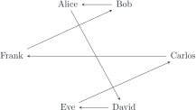
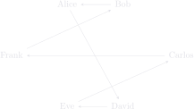
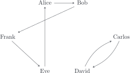
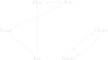
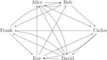
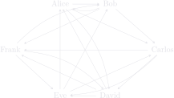

Assigns $k$ gift recipients to each person in a fair way.
In a classic Secret Santa, each person gives and receives one gift. This tool
generalizes that concept to a $k$-fold gift exchange, where every person
is randomly assigned $k$ distinct gift recipients in such a way that everyone ends
up receiving $k$ gifts. It has three modes: Public Mode
where the
assignments are plainly visible, Secret Mode (Trusted Organizer)
where the
assignments are encrypted with keys the organizer hands out, and
Secret Mode (Double Blind)
where each participant holds their own private
key and even the organizer cannot read anyone's row. Below is an explanation of
the graph theory, algorithm, and cryptography involved.
Type one name and press Add Participant, or add a whole group at once by
separating names with semicolons (e.g. Alice; Bob; Carlos).
Got a message and a key? Go to the decrypt page →
In a typical gift exchange, each giver is assigned a receiver, and no one person receives from two people. This can be represented by a directed graph. Here are two examples.
|
  |
  |
In the first case, we have a connected graph, and in the latter we have a disconnected graph. Both situations can occur when drawing names from a hat, so for now we allow connected and disconnected gift assignments. Directed graphs can equivalently be described in terms of their adjacency matrix. With our people ordered Alice, Bob, Carlos, David, Eve, Frank (rows are givers, columns are receivers), the two graphs above respectively have adjacency matrices
$$ \begin{pmatrix} 0 & 0 & 0 & 1 & 0 & 0 \\ 1 & 0 & 0 & 0 & 0 & 0 \\ 0 & 0 & 0 & 0 & 0 & 1 \\ 0 & 0 & 0 & 0 & 1 & 0 \\ 0 & 0 & 1 & 0 & 0 & 0 \\ 0 & 1 & 0 & 0 & 0 & 0 \end{pmatrix} \qquad\qquad\qquad\qquad \begin{pmatrix} 0 & 1 & 0 & 0 & 0 & 0 \\ 0 & 0 & 0 & 0 & 0 & 1 \\ 0 & 0 & 0 & 1 & 0 & 0 \\ 0 & 0 & 1 & 0 & 0 & 0 \\ 1 & 0 & 0 & 0 & 0 & 0 \\ 0 & 0 & 0 & 0 & 1 & 0 \end{pmatrix} $$Having a 1 in the $(i,j)$-entry means the $i$th person gives a gift to the $j$th person.
Now let's explore the $k=2$ case, i.e. where every person gives and receives two gifts. If we simply draw from hats with each name doubled, someone could end up giving two gifts to the same person. As we increase $k$, this becomes more and more likely to occur.
Let $v_1,\dots,v_n$ be the vertices, and let $\mathrm{deg}_\mathrm{in}(v_i)$ and $\mathrm{deg}_\mathrm{out}(v_i)$ be the number of arrows pointing into $v_i$ and out of $v_i$, respectively. We want an algorithm which generates a directed graph satisfying the following properties:
In terms of adjacency matrices, these are:
Here is a $k=3$ example:
|
  |
$$ \begin{pmatrix} 0 & 1 & 1 & 1 & 0 & 0 \\ 1 & 0 & 1 & 0 & 0 & 1 \\ 0 & 0 & 0 & 1 & 1 & 1 \\ 1 & 0 & 0 & 0 & 1 & 1 \\ 1 & 1 & 1 & 0 & 0 & 0 \\ 0 & 1 & 0 & 1 & 1 & 0 \end{pmatrix} $$ |
The algorithm begins with a greedy algorithm which simply operates one row
at a time. Sometimes the greedy algorithm reaches an impasse where no more edges
can be added without breaking a rule and someone still doesn't have $k$ recipients.
In that case, the repair() function is called to get
unstuck. Below is pseudocode for the algorithm:
function generate(n, k):
received = {each person: 0} # how many gifts they've received so far
given = {each person: 0} # how many gifts they've given so far
edges = []
for each giver g (in random order):
while given[g] < k: # g still needs to give k - given[g] more
# gifts; once given[g] == k, g is done
options = people not equal to g who still have room (received < k)
if options is non-empty:
pick a random recipient r from options
add edge g -> r
remove r from options
given[g] += 1 # g has now given one more gift
received[r] += 1 # r has now received one more gift
else:
repair(g) # see below
return edges
function repair(stuckGiver s):
# s is stuck: there are no more available recipients. Create a chain of edge
# donations until one of the recipient slots are freed up.Here is a generator that runs through the above algorithm one step at a time. Set the number $n$ of participants and the number $k$ of gift assignments per participant, and then press Shuffle to start and Next step to begin generating entries. See if you can trigger the repair phase (it happens more commonly for larger $n$ and $k$).
Press Shuffle to randomly permute the rows. Then the current giver's legal cells are highlighted green: click a green cell to place a 1 (the highlights refresh for your next pick), or press Next step for a random legal pick. If the greedy algorithm stalls, the repair procedure gets activated.
In the two secret modes, the output is encrypted and each participant gets a key which decrypts just their assignments and no one else's. In the Trusted Organizer mode, the organizer has access to everyone's keys and theoretically could peek at the results. On the other hand, the Double Blind mode uses ElGamal public-key encryption. This means each participant generates public and private keys, and the organizer only ever has access to the public keys which the generator uses to encrypt the message. A participant's assignments can only be viewed using their private key, and the organizer never has access to the results.
Call the participants $P_0,\dots,P_{n-1}$. The generated gift assignments are initially encoded as an $n\times n$ adjacency matrix consisting of 0's and 1's. The assignments for the $i$th participant is a single row, which can be regarded as an $n$-bit binary number called their message. The tool then encrypts these messages and publishes a small JSON object holding the participant roster and one ciphertext per participant.
To actually encrypt the messages $X_i$, we use an additive one-time pad. Let $d=2^n+1$. The tool picks a random offset $b_i\in\mathbb{Z}_d$ and publishes $c_i=(X+b_i)\bmod d$ to the public message. The key $b_i$ is passed to the user, and the decryption page decrypts the $i$th row $c_i$ of the public message by calculating $X=c_i-b_i\bmod d$.
Example. Let $n=5$, so that $d=2^5+1=33$. If Alice is participant $P_0$ and is assigned recipients $P_1$ and $P_4$, then her row in the adjacency matrix is $X=10010$ in base 2, or $X=18$ in base 10. Suppose Alice gets assigned the offset $b_0=27$. Then the $0$th row of the public message is the ciphertext $c_0=18+27\equiv 12\bmod 33$. She recovers $X=12-27\equiv 18\bmod 33$ and converts back to binary to recover her recipient list.
Key format and length. The key
sent to the participant
actually encodes more data than just the offset $b_i$, and it's all in base 36 using
alphanumeric characters. In the above example, the tool actually sends Alice the
key a0ryq. The leading 'a' marks the additive encryption
method, which distinguishes it from the ElGamal keys discussed below. The '0'
indicates Alice's row number. Alice's secret offset was $b_0=27$, which is
represented by the 'r' in base 36. The yq is a
two-character checksum that catches typos. For a party of 10, the row number and
offset each contain two digits, so the whole key uses $1+2+2+2=7$ characters. In
general, the offset requires $\lceil\log_{36}(2^n)\rceil$ characters.
Possible improvement. Since we know each row has exactly $k$ ones, there are only $\binom{n}{k}$ possible rows. Thus, our choice $d=2^n+1$ leaves more room than necessary to cover all the cases, especially when $k$ is close to 1 or $n$. Encoding each row of the adjacency matrix by its combinadic rank in the list $\left\{0,\dots,\binom{n}{k}-1\right\}$ would shrink the modulus to $\binom{n}{k}+1$. Because our primary goal is educational and $n$ and $k$ never grow that large anyway, we opted for simplicity over efficiency.
The default scheme assumes the organizer does not use the keys to peek at the assignments (or else does not participate). The Secret Mode (Double Blind) uses ElGamal public-key encryption to avoid this vulnerability. Fix once and for all a safe prime $p=2q+1$ (with $q$ prime) and a generator $g$ of $(\mathbb Z/p)^\times$. These two numbers are hardcoded constants (they need not be secret). Each participant uses the Key Generator to generate a keypair consisting of a private exponent $x\in\{1,\dots,q-1\}$, and the public value $y=g^x\bmod p$. They keep $x$ to themselves, and send $y$ to the organizer. The organizer enters everyone's public keys and generates the gift assignments, which are automatically encrypted using the procedure outlined below.
The $i$th row of the adjacency matrix corresponds to the participant $P_i$; let's say their private and public keys are $x_i$ and $y_i$, respectively. The entries in the row are encrypted individually to keep the modulus small. For each entry in the row, a random exponent $r$ is selected along with a uniform 64-bit string $r'$. Then the true message $m$ (which is either 0 or 1) is first converted to $\tilde m=(x+1)\cdot 2^{64}+r'$. This step on its own is easily reversed by simply dropping the last 64 bits and subtracting 1, but it helps against brute-force attacks by making the resulting message uniformly random from an attacker's perspective. The actual ciphertext is the pair
$$(c_1,c_2)=\bigl(g^r,\ \tilde m\cdot y^r\bigr),$$which is packaged into the public message. Using this data and the private key $x$, the Decryption Page uses the Euclidean algorithm to invert $c_1^x\bmod p$ and then calculates $c_2\,(c_1^x)^{-1}\bmod p$. Since $c_1^x=(g^r)^x=(g^x)^r=y^r$, the product $c_2\,(c_1^x)^{-1}$ returns $\tilde m$ modulo $p$.